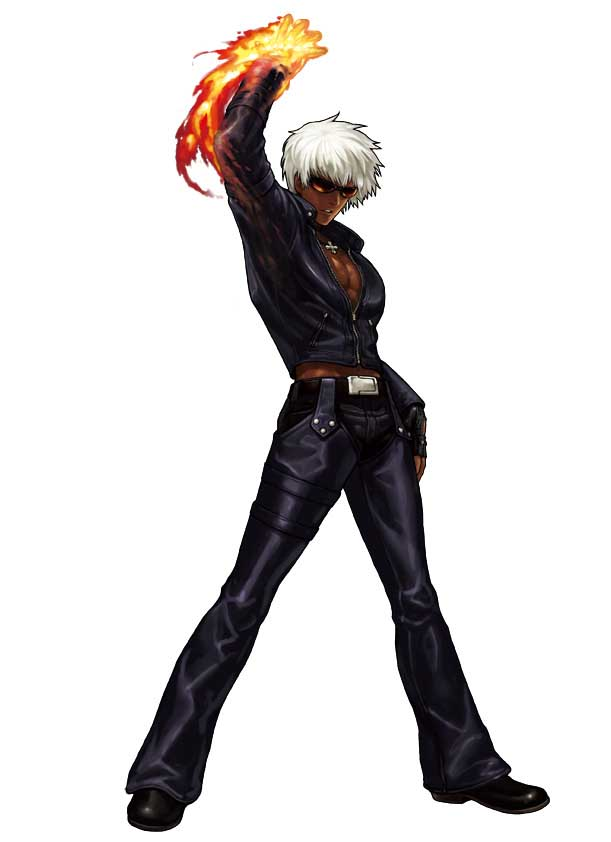

K'K'
K'K'K' (ケイ・ダッシュ Kei Dasshu?, pronunciado en inglés Kay Dash o Kay Prime, debido al símbolo en su nombre) es uno de los personajes principales de la serie de videojuegos The King of Fighters de SNK Playmore. Es un personaje icónico de la serie y aparece regularmente en material publicitario y mercancías de la marca. También es protagonista en la saga de NESTS en la franquicia. Su voz es doblada por el actor japonés Yuuki Matsuda. Además de la serie principal de KOF, K' aparece en muchos otros medios como spin-offs (juegos con una historia diferente a la principal), crossovers (juegos donde se combinan personajes de juegos de diferentes marcas), así como en adaptaciones a comics, mangas y anime basados en el juego. Los críticos han elogiado el diseño del personaje y su estilo de pelea como uno de los mejores de la serie. Destacaron además que K' era un personaje muy necesario en cada juego de la serie además de comentar que tiene la mejor pose de victoria. Una gran variedad de mercancías basadas en K' han sido creadas como son llaveros y figuras de acción.